Зима.
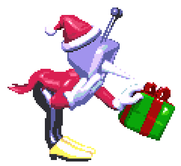Капли холодной воды падают с небес.
Это неизбежно, но вскоре вновь придёт весна...
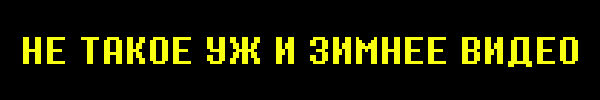Это, конечно, никак не связано с зимой, но давайте посмотрим еще один фрагмент 5 главы Дельтаруна прямиком из Города-замка.
Это продолжение прошлого фрагмента. Чтобы его увидеть, в вашем городе должен находиться Тенна..."
Разумеется, это спойлер, если вы еще не прошли 3 и 4 главу.
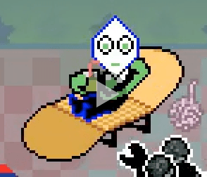 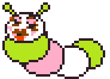Всё идет по плану, и даже лучше!
Мы начали процесс локализации! Извлекли текст из игры... 8-4 и я прокомментировали его для переводчика.
Когда локализация достигнет финальных стадий, мы начнем тестирование с профессиональной командой тестировщиков.
Также нам предстоит изучить, как игра работает на консолях. Этим мы займемся ближе к январю.
Если бы меня попросили дать реалистичную оценку, я бы сказал, что до релиза игры осталось несколько месяцев.
Даже не верится, что всего 6 месяцев назад у нас были только первые две главы, но очень скоро большая часть команды, вероятно, уже сосредоточится на 6 главе...
БОЛЬШЕ ДЕТАЛЕЙ
- Все игровые локации почти полностью готовы, не хватает лишь финальной фоновой доводки.
- Практически все игровые сцены завершены. Некоторые из них требуют визуальной шлифовки.
- Большинство игровых сражений закончено, остались лишь некоторые. Эти незавершенные битвы функционируют от начала до конца, но нуждаются в корректировке темпа и паттернов атак, чтобы считаться полностью готовыми.
Десятки часов веселья гарантированы!
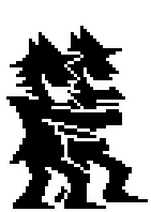 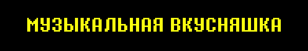Я просмотрел музыку, и это единственный саундтрек, который ничего не спойлерит.
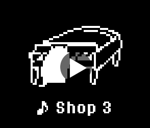Его использует большинство оставшихся в игре торговцев...
На этом всё о пятой главе!
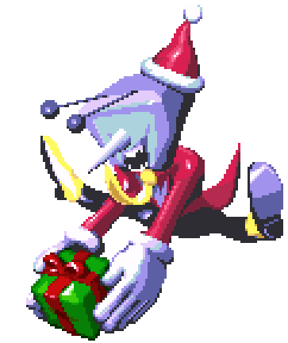Это не очень по-новогоднему, но прошло уже шесть месяцев. Не пора ли оглянуться на 3 и 4 главы и поделиться своими мыслями?
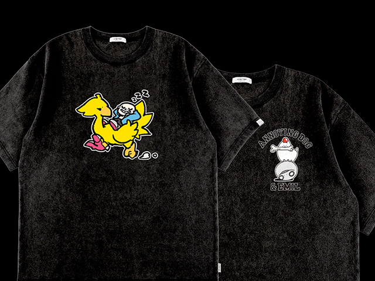Йоу, зацени!
((Подходит к вам. Затем экран кружится с громким шумом))
SQUARE ENIX официально сотрудничает с UNDERTALE!
Пока что планируются футболки и музыкальные альбомы. (Темми внесла свой вклад в некоторые дизайны!)
Не могу не упомянуть и фортепианный альбом!Echoes Beneath
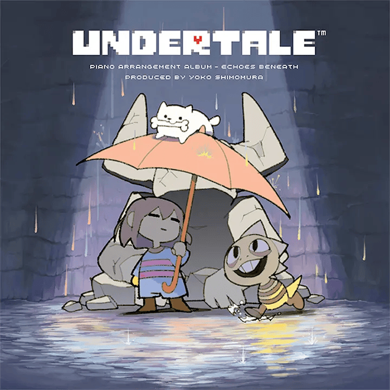Над созданием и исполнением этого проекта трудились многие талантливые художники из Square Enix. Продюсером выступила Йоко Симомура (композитор Kingdom Hearts, LIVE A LIVE, Super Mario RPG и многих других), которая также аранжировала один из треков!
Прикольно, да? ((Краснеет и исчезает с тихим звуком))
Эй, постой! Я слишком хорош для этого! ((Исчезает, на этот раз крошась на мелкие кусочки и медленно сползая с экрана.))
Так то лучше...
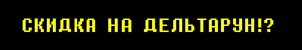И последнее! ДЕЛЬТАРУН со скидкой 20% на Зимней распродаже в Steam!
Скоро в продаже и для консолей! Не пропустите!
... Я почти уверен, что все, кто читает эту рассылку, уже купили игру. Верно?
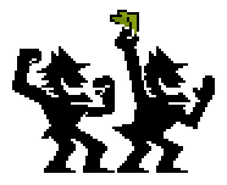5 глава уже движется полным ходом!!! Счастливого 2026 года!!!
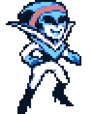